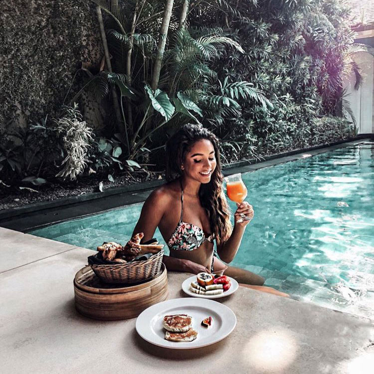
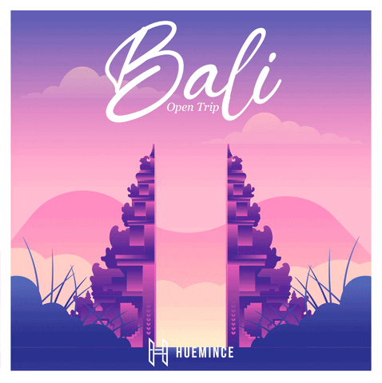

About Bali
 In this article I want to tell you a little about Bali, where I have been living at the moment for about 2 years. Plan your adventures with insights into 2024’s global travel trends.
Links to my social networks
Instagram: @lletsbloggIn this article I want to tell you a little about Bali, where I have been living at the moment for about 2 years. Plan your adventures with insights into 2024’s global travel trends.
Often tourists who are going to visit and spend their holidays on the island of Bali ask us questions about how the weather is, how often does it rain and what is the air temperature in May or January. So, we want to briefly talk about the climatic features for those who are planning to vacation in Bali. The climate in Bali is equatorial and subequatorial, maritime. Summer lasts almost all year round. There are two seasons on the island of Bali - dry (April to October) and wet (November to March). Air temperatures can reach 31°C in coastal areas, and drop slightly further inland, for example to the North. The best time for a holiday in Bali is from April to October, with rare rains, an average air temperature of +28 and moderate humidity. But important information for everyone! Don’t think that you shouldn’t go on holiday to Bali during the “wet” season. From November to March it rains preferably at night and does not interfere with rest at all. So you can safely choose any of the months of the year and not be afraid of rainy weather. Holidays in Bali are wonderful at any time of the year!

I am also often asked, where are the best beaches in Bali? The answer to this question is very individual, based on who is pursuing what in their holiday in Bali - the beaches of Kuta and Seminyak are definitely suitable for surfers and extreme sports lovers, to ride the waves and refuel with positive emotions. On the coast of Kuta, the ocean is seething and gushing with liveliness, the waves are almost around the clock, which is why surfers and those who like to ride boards prefer to relax here. On the coast of Nusa Dua and Jimbaran, the ocean is very calm, almost all hotels are located in the lagoon. These Bali beaches are more suitable for lovers of quiet and relaxing leisure.
BALI. TRAVELLERS PARADISE